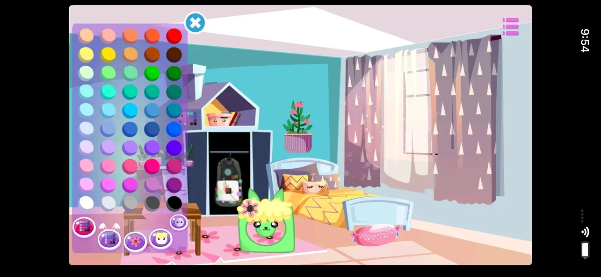
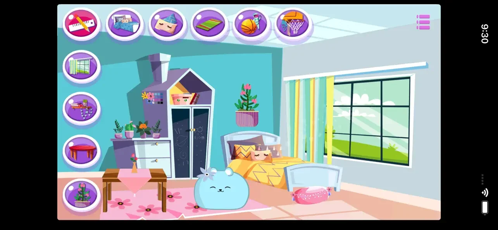
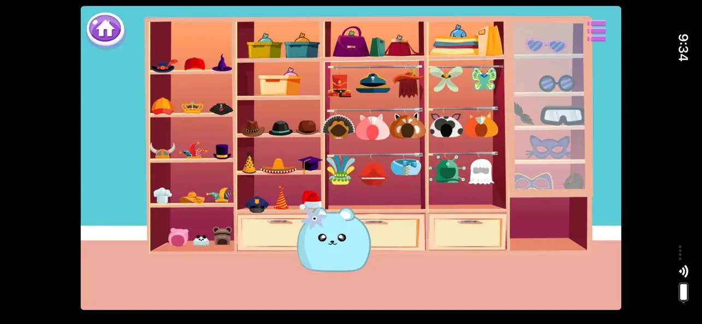

Create & dress up
Customize your Mochi and dress up both Mochi and baby plushies with outfits and accessories.
Virtual pet & dress up · iOS · Android
Your plush friend. Your own cozy world.
Create your Mochi, dress up baby plushies, decorate bedrooms and collect stickers. Visit the Golden Cloud each day to earn free Bunny Tokens.
Discover the details ↓
Meet Mochi Plush Kawaii
Create a Mochi with its own colors and personality, then make a home for your growing plush family. Choose outfits and accessories, decorate bedrooms, feed your Mochi and explore activities around the house. Mochi Plush Kawaii is a creative virtual pet game for players who enjoy collecting, decorating and cute little surprises.
Daily Golden Cloud
Choose your favorite character, scratch the clouds and earn free Bunny Tokens through the daily Golden Cloud activity. Enjoy another way to collect tokens as you play.
Customize your Mochi and dress up both Mochi and baby plushies with outfits and accessories.
Arrange rooms, choose colors and add furniture to make a cozy home for your plush friends.
Fill your sticker album, collect baby plushies and adopt cute pet friends.
Enjoy mini-games and daily rewards. Visit the Golden Cloud activity each day to earn free Bunny Tokens.



The 2026 preview
See Mochi’s colorful world, outfits, decorating and playful activities in the latest game preview.
3.8
1M+
See the listing and reviews5.0
See the listing and reviews“This game is incredible I am…”
Google Play · 5/5 · October 30, 2020
“Yes, my awaited childhood dreams was…”
Google Play · 4/5 · October 2, 2023
Ratings are shown separately by store and can vary by country and over time. These short excerpts are displayed publicly by Google Play and do not represent every review.
Free to download on iOS and Android, with optional in-app purchases. Bunny Tokens can also be earned through play, including the daily Golden Cloud activity.
Keep exploring

Room decorating
Dress up Lili and her teddy bear, then decorate their bedroom with furniture, colors and toys. Make your own creative choices and return to your saved room. Lili’s Bedroom is an offline decorating game for iOS, without ads.
iOS
Explore Lili’s Bedroom
One-tap rhythm
Tap when the moving circle reaches the glowing arc, build combos and reveal illustrated backgrounds. Choose the gentle Zen Mode or the quicker Fast Mode. Explore 10 worlds, including five free worlds, with an optional one-time Premium purchase. A rhythm game for iPhone and iPad.
iPhone · iPad
Explore Zen Circle SpiritVirtual pet & dress up
Create a Mochi virtual pet, dress up baby plushies and decorate their bedrooms. Collect stickers and play mini-games. The daily Golden Cloud activity lets you earn free Bunny Tokens for your little plush world.
iOS · Android
Explore Mochi Plush Kawaii